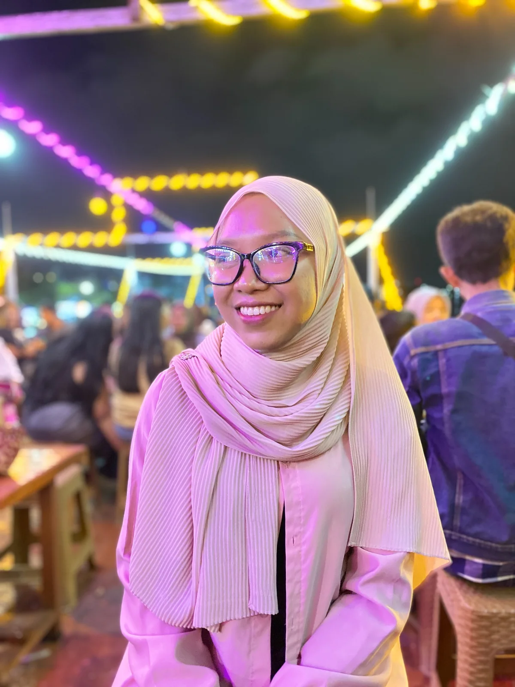

SELAMAT ULANG TAHUN, SAYANGHari ini,
Hari ini,
dunia punya
alasan tersenyum.
Karena ada kamu di dalamnya,
Bee Balqis.

UNTUK MENEMANI KAMU
A little honeybee.
Honeybee · Olivia Rodrigo
Lagu mulai saat surat dibuka.
Dengarkan di YouTube ↗HAL-HAL KECIL, RASA YANG BESARKalau bahagia
Kalau bahagia
bisa disimpan.
Mungkin bentuknya seperti ini.
12 potong cerita
01 / 12
Geser pelan-pelan. Aku suka semuanya. ♡
Petik satu pesan.
Ada hal kecil di setiap bunga.
Selamat ulang tahun,
sayang.
Semoga makin banyak hal baik yang datang ke hidup Bee, makin banyak tempat yang bisa dijelajahi, dan makin banyak alasan buat senyum seperti di foto-foto ini.
Semoga yang sedang kamu usahakan pelan-pelan menemukan jalannya. Semoga hari-harimu terasa hangat, dan saat lelah, selalu ada tempat untuk istirahat.
Aku senang bisa ada di antara cerita-cerita kecilmu. Untuk semua perjalanan, tawa, dan hari biasa yang jadi lebih manis karena ada kamu.
Hari ini, mau ngingetin sekali lagi:
Aku sayang kamu.
Banyak banyak. ♡